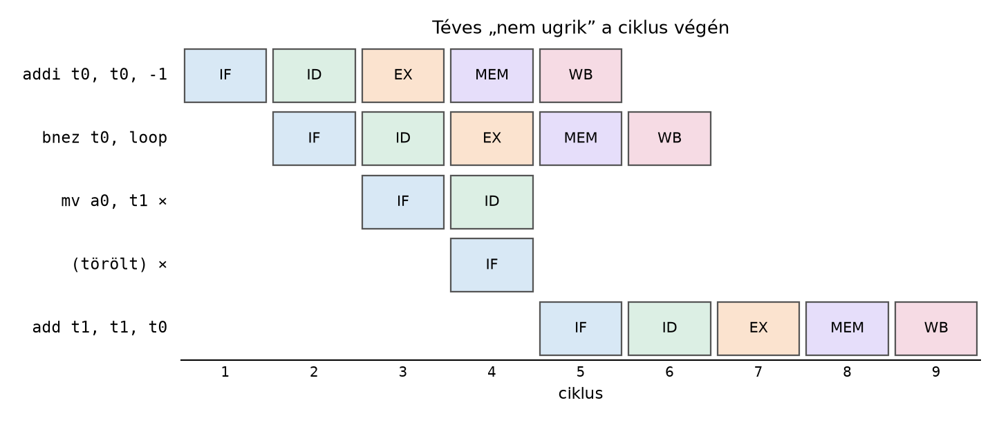

Az előző alfejezetben a sum kernel 64 elemes futása
forwardinggal és ütemezés nélkül 531 ciklus volt. A load-use megakadás
ebből 64 ciklust magyaráz. Maradt egy ennél is nagyobb tétel:
126 ciklus a ciklus végi bnez a1, loop
miatt. Ez az elágazás 64-szer fut le, ebből 63-szor visszaugrik, és
minden visszaugrásnál két ciklus vész el. A teljes futási idő közel
negyede olyan utasítások lekérésére megy el, amelyeket a gép később
kidob.
A baj forrása, hogy a lekérésnek (IF) minden ciklusban címre van szüksége, az elágazásról viszont csak a futószalag mélyén derül ki, hogy ugrik-e, és hová. Ez a vezérlési hazárd (control hazard). Hasonló kérdés, mi történjen, ha egy utasítás kivételt okoz, miközben mögötte már több másik is úton van. Mindkét esetben ugyanaz az eszköz segít: a fiatalabb utasítások törlése (flush).
Egy navigátor vagy: a sofőr (az IF) minden kereszteződés előtt tudni akarja, merre menjen, de a térképet csak kétsaroknyira a kereszteződés után tudod ellenőrizni. Megállhatsz minden sarkon (lassú), vagy tippelsz, és ha tévedtél, visszatolatsz. A legegyszerűbb tipp: „menjünk egyenesen”, vagyis a gép a PC + 4 címen folytatja, mintha az elágazás nem ugrana. Ha igaza volt, nem veszít semmit; ha az elágazás ugrik, a rossz úton megkezdett utasításokat törli.
Az ábra egy mindig ugró beq zero, zero, cel utasítást
követ. Figyeld meg a 3. ciklust: a beq az EX-ben dől el,
mögötte két, rossz címről lekért utasítás ül az ID-ben és az IF-ben. A
4. ciklusban ezekből buborék lesz, és az IF már a
helyes cél add utasítását kéri le. A buborékok ezután úgy
vándorolnak végig, mint bármely utasítás, csak nem csinálnak semmit.
Definíció. Statikus becslés az, amikor a gép (vagy a fordító) futási előzmény nélkül, rögzített szabállyal tippeli meg az elágazás irányát. A „mindig nem ugrik” szabálynál a lekérés a PC + 4-ről folytatódik.
Definíció. Tévesztés (misprediction) az, amikor a becsült irány eltér a ténylegestől; a tévesztési arány a tévesen becsült elágazások hányada. Elágazás-büntetés (branch penalty) a tévesztéskor elveszett ciklusok száma.
Ha az elágazás az EX-ben dől el, a tévesztés felismerésekor két rossz utasítás van a gépben: az egyik az ID-ben, a másik az IF-ben. A törlés hardveresen annyi, hogy a következő órajelnél az IF/ID és az ID/EX szakaszregiszterbe nullázott vezérlőjelek (buborék) kerülnek, a PC pedig a kiszámított célcímet kapja. A törölt utasítások egyetlen regisztert és memóriaszót sem módosítottak, mert egyik sem jutott el a MEM-ig. Ezért .
A helyes „nem ugrik” becslés semmibe sem kerül. A feltétlen
ugrásoknál (Vezérlésátadás: elágazás, ugrás,
ciklus, switch) nincs mit eldönteni, de a célcím sem ismert a
lekéréskor: a jal célja az ID-ben (a közvetlen értékből)
már kiszámítható, ekkor 1 ciklus a veszteség; a jalr célja
regiszterből jön, ezért tipikusan az EX-ig kell várni. A könyv
szimulátora alapesetben minden ugrásra a
értéket számítja.
A büntetés csökkenthető, ha az elágazás korábban dől el. Az ID
szakaszban elhelyezett egyenlőség-összehasonlító és
célcím-összeadó már a regiszterolvasás után meg tudja
mondani, ugrik-e a beq, ekkor csak egy rossz utasítás kerül
a gépbe:
.
Ennek azonban ára van:
| Az elágazás előtti termelő | Távolság | Megakadás (ID-döntés) |
|---|---|---|
| ALU-utasítás | 1 | 1 (EX/MEM → ID) |
| ALU-utasítás | 2 vagy több | 0 |
betöltés (lw) |
1 | 2 |
betöltés (lw) |
2 | 1 |
A táblázat azt mutatja, hogy a ciklusszámlálót közvetlenül az
elágazás előtt csökkentő, tipikus ciklusvégen
(addi a1, a1, -1; bnez a1, loop) a megspórolt
ciklus rögtön elvész megakadásként, hacsak a fordító nem tesz közéjük
független utasítást.
A MIPS másik megoldást választott: az elágazás utáni utasítás, a
késleltetési rés (delay slot) mindig
végrehajtódik, akár ugrik az elágazás, akár nem. A fordító
feladata a rést hasznos, az ágtól független utasítással kitölteni; ha
nem talál ilyet, nop kerül bele. Egy ötszakaszos, ID-ben
döntő gépen ez elrejti a teljes büntetést. A RISC-V mégsem vette át
([S-RISCV-ISA]), mert a rés az ISA-szerződésbe írja bele egy konkrét
mikroarchitektúra tulajdonságát:
Ez „az architektúra ígér, a mikroarchitektúra teljesít” elv tanulságos esete.
Tekintsük az utasítások átlagát. Ha az utasítások hányada feltételes elágazás, ezek hányadát tévesen becsüljük, és egy tévesztés ciklusba kerül, akkor utasításonként átlagosan ciklus vész el:
A képlet a tévesztések gyakoriságát és árát szorozza össze; a tartalmazza a többi veszteséget (ideális esetben 1). „Mindig nem ugrik” becslésnél éppen az ugró elágazások aránya.
Legyen és az elágazások 60%-a ugró. Az ötszakaszos, EX-ben döntő gépen ; ha minden elágazásnál várnánk (), 1,4. Ugyanez a program egy mély futószalagon -tel: 5%-os tévesztéssel 1,15, 50%-ossal 2,5. Figyeld meg az ábrán, hogy a görbe meredeksége a legnagyobb: minél mélyebb a futószalag, annál többet ér a pontos becslés. Ez a következő fejezet (Statikus becslés és a kétbites számláló) fő motivációja.
Továbbvitt eredmény. Az elágazás-büntetési CPI-modell: , ahol „nem ugrik” becslésnél az ugró arány. A becslők minősítését erre építi a Statikus becslés és a kétbites számláló, a TAGE-elv és perceptron-becslő és a Célcím-becslés: BTB, RAS, közvetett ugrások és a front-end, a nagy magok IPC-korlátját pedig az Egy modern mag anatómiája.
A Kivételek, megszakítások és
privilégiumszintek alfejezet szerint a pontos
kivétel (precise exception) azt jelenti: a kivételt okozó
utasítás előtt minden befejeződött, utána semmi nem történt, és a
mepc a hibás utasításra mutat. Az egyciklusú gépen ez
magától teljesül. A futószalagon nem, mert a kivétel különböző
szakaszokban derül ki: lekérési hiba az IF-ben, ismeretlen utasítás az
ID-ben, igazítatlan vagy tiltott adatcím az EX-ben vagy a MEM-ben. Sőt,
egy fiatalabb utasítás kivétele időben
korábban észlelhető, mint egy idősebbé.
Az ötszakaszos gép megoldása:
mepc-be
a hibás utasítás címét, az mcause-ba az okot írja, és a
lekérés a mtvec-ben megadott kezelőnél folytatódik.Mivel a döntés programsorrendben történik, egyszerre jelentkező hibák
közül mindig az idősebb nyer. Egy finomság: amikor a hibás utasítás a
WB-ben van, a közvetlenül utána álló éppen a MEM-ben
van. Ha ez egy sw, az írását még ugyanebben a ciklusban le
kell tiltani, különben a memória megváltozik, mielőtt a törlés
megtörténne. A regiszterírás a WB-ben történik, ezért a fiatalabbak
regisztert még nem írhattak.
A megszakítás (interrupt) aszinkron, nem egy utasításhoz tartozik: a
hardver választ egy utasítást, amely előtt „megáll”, az idősebbeket
befejezi, a fiatalabbakat törli, és a mepc-be a
kiválasztott utasítás címe kerül.
Továbbvitt eredmény. A futószalagos pontos kivétel: a kivételt az utasítással együtt visszük, programsorrendben, a véglegesítéskor kezeljük, a fiatalabbakat törölve (a függő memóriaírást is). Ugyanez az elv sorrenden kívüli gépen az átrendezőpufferrel valósul meg (Regiszterátnevezés, ROB és spekuláció).
Ciklus, amely 3, 2, 1 összegét képzi: li t0, 3;
li t1, 0; loop: add t1, t1, t0;
addi t0, t0, -1; bnez t0, loop;
mv a0, t1.
1. lépés: a végrehajtott utasítások. A ciklusmag
háromszor fut:
.
A bnez háromszor fut, kétszer ugrik.
2. lépés: EX-ben döntő gép, „nem ugrik”. Adathazárd
nincs (forwardinggal az addi eredménye a bnez
EX-ébe az EX/MEM-ből érkezik). Két tévesztés, egyenként 2 ciklus:
.
3. lépés: ID-ben döntő gép. A büntetés 1:
ciklus. A bnez viszont most a t0-ra az ID-ben
vár, és a termelője közvetlenül előtte áll
():
mindhárom futásnál 1 megakadás.
.
A „korai döntés” itt rosszabb.
4. lépés: a diagram (EX-döntés) az első visszaugrás
környékén: a teljes futásban a bnez az 5. ciklusban IF, a
7.-ben EX; a törölt mv és az utána következő utasítás a 6.
és 7. ciklusban lekért, majd buborékká váló két utasítás; az új
add a 8. ciklusban indul.

(A kivágásban a ciklusok 1-től újra vannak számozva: itt a
bnez a 4. ciklusban dől el.)
A kézi példa ellenőrzése mindkét döntési hellyel:
import sys; sys.path.insert(0, "code")
from archkit import pipeline, riscv, trace
kod = """
li t0, 3
li t1, 0
loop:
add t1, t1, t0
addi t0, t0, -1
bnez t0, loop
mv a0, t1
"""
m = riscv.run(kod)
for hol in ("EX", "ID"):
r = pipeline.simulate(m.trace, branch_stage=hol, program=m.program)
veszt = {k: v for k, v in r.stalls.items() if v}
print(f"döntés {hol}: N={r.n}, {r.cycles} ciklus, a0={m.reg('a0')}, veszteség: {veszt}")
r = pipeline.simulate(m.trace, program=m.program)
print(r.table(3, 5))döntés EX: N=12, 20 ciklus, a0=6, veszteség: {'elágazás': 4}
döntés ID: N=12, 21 ciklus, a0=6, veszteség: {'elágazás-operandus': 3, 'elágazás': 2}
utasítás 4 5 6 7 8 9 10 11 12
addi t0, t0, -1 IF ID EX MEM WB
bnez t0, loop IF ID EX MEM WB
mv a0, t1 × IF ID – – –
(hibás ág) × IF – – – –
add t1, t1, t0 IF ID EX MEM WBAz ID-döntés csak akkor nyer, ha a fordító helyet csinál. A
sum ciklusában az addi a1 előrehozása
egyszerre szünteti meg a load-use veszteséget és az elágazás-operandus
megakadást:
sum_kod = riscv.sum_src(list(range(1, 65)))
utemezett = sum_kod.replace(
" add t0, t0, t1\n addi a0, a0, 4\n addi a1, a1, -1\n",
" addi a1, a1, -1\n add t0, t0, t1\n addi a0, a0, 4\n")
for nev, src in (("eredeti", sum_kod), ("ütemezett", utemezett)):
nyom = riscv.run(src).trace
ex, idk = (pipeline.simulate(nyom, branch_stage=h) for h in ("EX", "ID"))
print(f"{nev:<10} EX-döntés: {ex.cycles} ciklus ID-döntés: {idk.cycles} ciklus")eredeti EX-döntés: 531 ciklus ID-döntés: 530 ciklus
ütemezett EX-döntés: 467 ciklus ID-döntés: 402 ciklusA CPI-modell és a szimuláció összevetése a branchy
kernelen, három küszöbértékkel (az adat 256 véletlen bájt, a mag 1):
adat = riscv.branchy_data(256, seed=1)
for kuszob in (32, 128, 224):
nyom = riscv.run(riscv.branchy_src(adat, threshold=kuszob)).trace
agak = [i for i in nyom if i.kind == "br"]
f = len(agak) / len(nyom)
m_arany = sum(i.taken for i in agak) / len(agak)
r = pipeline.simulate(nyom)
modell = pipeline.branch_cpi(f, m_arany, 2, base=0)
print(f"küszöb {kuszob:>3}: f={f:.3f} m={m_arany:.3f} modell {modell:.3f} "
f"szimulált {r.stalls['elágazás'] / r.n:.3f} CPI {r.cpi:.3f}")küszöb 32: f=0.338 m=0.570 modell 0.386 szimulált 0.386 CPI 1.560
küszöb 128: f=0.361 m=0.752 modell 0.542 szimulált 0.542 CPI 1.728
küszöb 224: f=0.387 m=0.941 modell 0.729 szimulált 0.729 CPI 1.928A modell elágazási tagja pontosan egyezik, mert a szimulátorban
minden tévesztés éppen 2 ciklus. Végül a pontos kivétel: a
lw igazítatlan címet olvas, a mögötte álló sw
a 9. ciklusban már a MEM-ben volna.
hibas = """
la t0, kezelo
csrw mtvec, t0
li a0, 2
lw a1, 0(a0)
sw a0, 0x100(gp)
addi a2, a2, 1
j vege
kezelo:
csrr a3, mepc
csrr a4, mcause
vege:
nop
"""
m = riscv.run(hibas, regs={"gp": 0x10000})
r = pipeline.simulate(m.trace, program=m.program)
print(r.table(4, 5))
print(f"mepc = {m.reg('a3'):#x}, mcause = {m.reg('a4')}, sw hatása: {m.read(0x10100)}")utasítás 5 6 7 8 9 10 11 12 13
lw a1, 0(a0) IF ID EX MEM WB
sw a0, 0x100(gp) × IF ID EX MEM –
addi a2, a2, 1 × IF ID EX – –
j vege × IF ID – – –
csrr a3, mepc × IF – – – –
mepc = 0x10, mcause = 4, sw hatása: 0A mepc a lw címe, az ok a 4-es (igazítatlan
betöltés), a sw nem írt a memóriába. A lw a 9.
ciklusban ér a WB-be; a kezelő első utasítása a 10. ciklusban lekért, a
diagram kivágásán kívül eső csrr a3, mepc.
sw még írt.
Javítás: jelöld meg az utasítást, kezeld a WB-ben, és
tiltsd le a függő írást.mepc a hibás utasítás címe; a kernelnek kell eldöntenie,
megismétli-e (laphiba) vagy átlépi (ecall esetén 4-gyel
növeli). Javítás: a visszatérési címet az ok alapján
állítsd.lw t0, 0(a0); beq t0, zero, L (nem ugrik);
add t1, t1, t0, ID-ben döntő gépen. Hány megakadás?lw igazítatlan címet olvas (a
MEM-ben derül ki), a közvetlenül utána lekért szó pedig érvénytelen
utasítás (az ID-ben derül ki). Melyik ciklusban észlelik őket, ha a
lw az 1. ciklusban indul, és melyik kivétel jut a
kezelőhöz?branchy
kernel és az elágazásmentes változata (branchless=True)
ciklusszámát a 128-as küszöbbel. Melyik gyorsabb az ötszakaszos gépen
„nem ugrik” becsléssel, és miért félrevezető csak a CPI-t nézni?Vezérlési hazárd azért van, mert a lekérés címe az elágazás eldöntése
előtt kell. „Mindig nem ugrik” becsléssel a helyes eset ingyenes; téves
becslésnél az EX-ben döntő ötszakaszos gép két utasítást töröl
().
Az ID-be hozott döntés
-et
ad, de az operandusok egy ciklussal korábban kellenek (ALU után 1,
lw után 2 megakadás), a RISC-V pedig tudatosan nem használ
késleltetési rést. Az átlagos veszteség:
,
ezért mély futószalagon a becslés pontossága döntő. A pontos kivételt a
futószalag úgy biztosítja, hogy a hibás utasítást megjelöli,
programsorrendben a WB-ben kezeli, törli a fiatalabbakat (a függő
sw írását is), a mepc a hibás utasítás címét,
a vezérlés pedig a mtvec kezelőjét kapja.
beq a t0-t az ID-ben kéri, a termelő
lw közvetlenül előtte áll: 2 megakadás. Diagram:
lw IF 1, ID 2, EX 3, MEM 4, WB 5; beq IF 2, ID
3–5 (két s), EX 6; add IF 3–5, ID 6, EX 7.
Elágazás-veszteség nincs, mert nem ugrik.lw MEM-je a 4. ciklus (IF 1, ID 2, EX 3, MEM 4). Az
érvénytelen utasítás ID-je a 3. ciklus, tehát időben előbb észlelik. A
döntés azonban a WB-ben, programsorrendben történik: a lw
az 5. ciklusban ér a WB-be, az igazítatlan betöltés kivétele nyer, a
másik utasítás törlődik. Ha a kezelő a lw-t kijavítva
visszatér, az érvénytelen utasítás kivétele akkor jelentkezik újra.nop, tehát
hasznos utasításonként
.
Rés nélkül:
.for nev, elagazasmentes in (("elágazásos", False), ("elágazásmentes", True)):
nyom = riscv.run(riscv.branchy_src(adat, branchless=elagazasmentes)).trace
r = pipeline.simulate(nyom)
print(f"{nev:<15} N={r.n:>4} ciklus={r.cycles:>4} CPI={r.cpi:.3f} "
f"elágazási veszteség={r.stalls['elágazás']}")elágazásos N=1420 ciklus=2454 CPI=1.728 elágazási veszteség=770
elágazásmentes N=2062 ciklus=2836 CPI=1.375 elágazási veszteség=510Az elágazásmentes változat CPI-je jobb, mégis lassabb: több utasítást hajt végre, és a vasegyenletben számít. Az ötszakaszos gépen a 2 ciklusos büntetés kicsi ahhoz, hogy a többletutasítások megérjék; mélyebb futószalagon, vagyis nagyobb büntetésnél a mérleg átbillenhet.